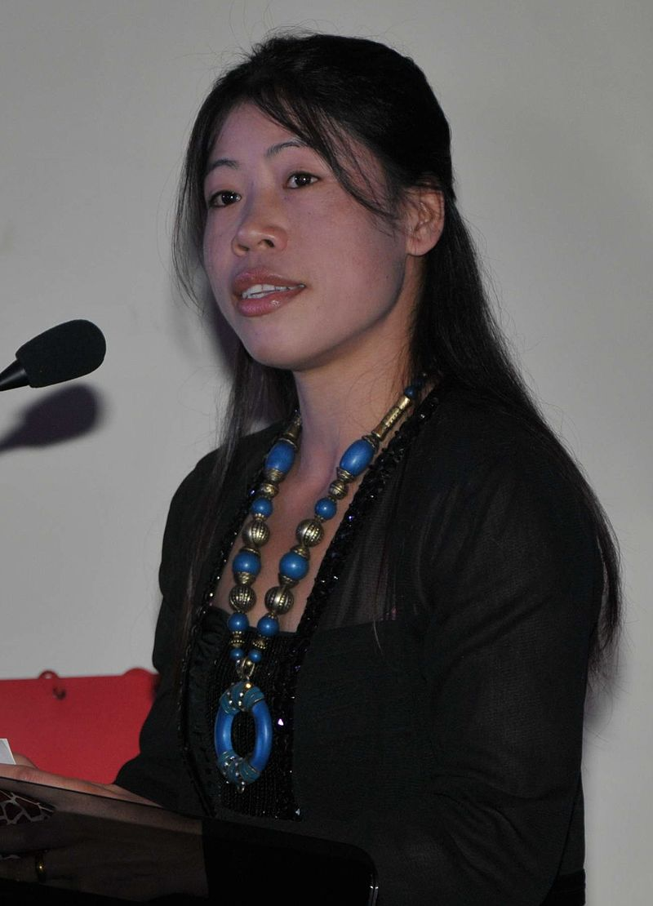
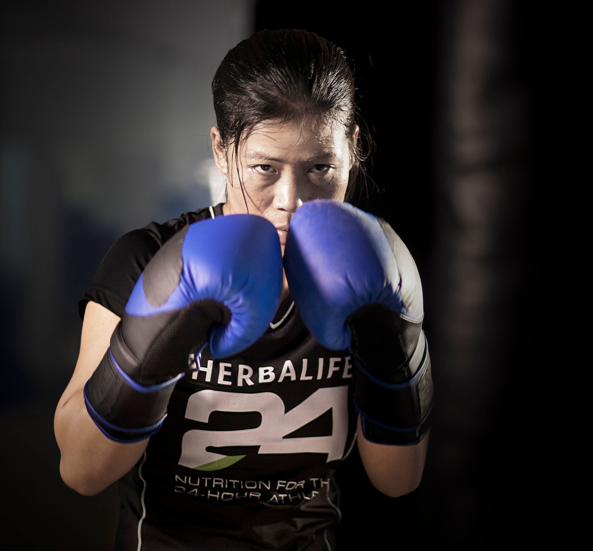

MC MARY KOM
Queen of the Ring
“A country like India has a lot of potential. I end with the hope that we will build on that. My life is my message: nothing is impossible.”

ABOUT US
MC Mary Kom, also known as "Magnificent Mary," is a trailblazing Indian boxer whose illustrious career has left an indelible mark on the world of sports. Born in November 24, 1982, in Manipur, India, Mary Kom has achieved remarkable
success in the world of boxing, becoming a six-time world champion and an Olympic bronze medalist. Her journey is a testament to her unwavering determination, resilience, and unrelenting pursuit of excellence.
Mary Kom's achievements have not only made her a sporting legend but also a symbol of inspiration and empowerment, particularly for women in India and beyond. Her dedication to her craft and her ability to overcome adversity have earned
her the admiration and respect of people worldwide. Mary Kom continues to inspire the next generation of athletes and remains a symbol of grit and triumph in the world of sports.

PERSONAL LIFE
EDUCATION: MC Mary Kom completed her education up to the 12th standard. Despite facing various challenges in her early life and focusing primarily on her boxing career, she pursued her education alongside her athletic
endeavors. Her relentless commitment to both academics and sports exemplifies her determination and dedication to achieving her goals.
MARRIED: Kom is married to the footballer Karung Onkholer (Onler). Kom first met her husband in 2000 after her luggage was stolen while traveling by train to Bangalore. In New Delhi while on her way to the National Games
in Punjab, she met Onkholer, who was studying law at Delhi University. Onkholer was the president of the North East students' body and helped Kom. They became friends and thereafter began dating each other. After four years,
they were married in 2005. Together they have three sons, twins born in 2007, and another son born in 2013. In 2018, Kom and her husband adopted a girl named Merilyn.
BOXING CAREER
Olympic Success: Mary Kom won a bronze medal at the 2012 London Olympics, marking a historic moment as the first Indian woman boxer to achieve an Olympic medal.
World Champion: She is a six-time World Boxing Champion, asserting her dominance in the sport on multiple occasions.
Asian Games Triumph: Mary Kom has won gold medals at the Asian Games, solidifying her status as one of Asia's top boxers.
Commonwealth Games Glory: She has also secured gold medals at the Commonwealth Games, showcasing her prowess on a global stage.
Padma Honors: Recognized for her contributions to Indian sports, Mary Kom has received prestigious awards like the Padma Bhushan and Padma Shri.
Iconic Legacy: Mary Kom's enduring legacy extends beyond her achievements, inspiring countless aspiring boxers, especially women, to pursue their dreams in the sport.
ACHIEVEMENTS
Six-time World Boxing Champion.
Olympic bronze medalist at the 2012 London Olympics.
Asian Games gold medalist multiple times.
Commonwealth Games gold medalist.
Padma Bhushan and Padma Shri awardee for her contributions to sports.
First Indian woman boxer to win a medal at the Olympics.
Regarded as one of the greatest female boxers in the world.

“Don’t give up as there is always a next time.”
"Believe in yourself, work hard, and never give up. Success may not come easily, but with determination and perseverance, you can achieve greatness." - Mary Kom.